Northern-lampa
GK5 modul 2, AHO, haust 2026. Ei stemningsskapande, funksjonell lampe for heim og arbeid. Lyset er skissert som rommet det lagar, på svart: svart er null lys, kvart strøk er lumen, og lampa er ein svart kropp.
Tre konsept
Frå seks formfamiliar med 18 kandidatar, rekna likt og etterprøvde. A brukar bøygd folie, B fresnelplata og C linsa og spegelen frå overheadprojektoren. Tala og det etterprøvinga fann står i 00-tre-konsept.md.
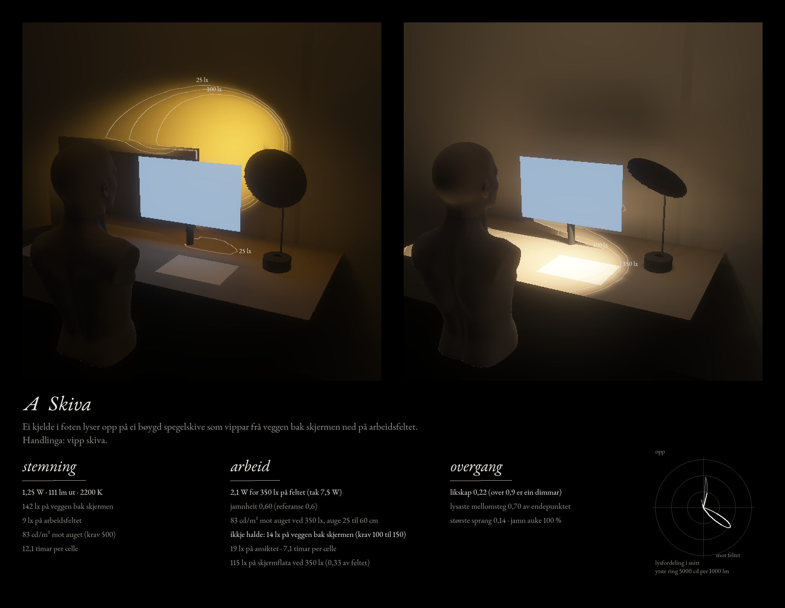
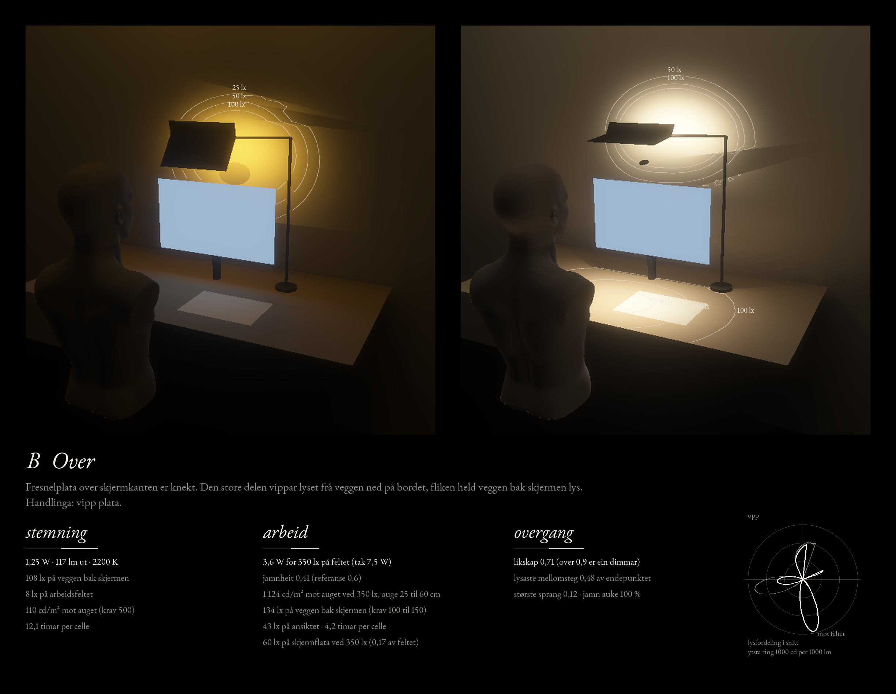
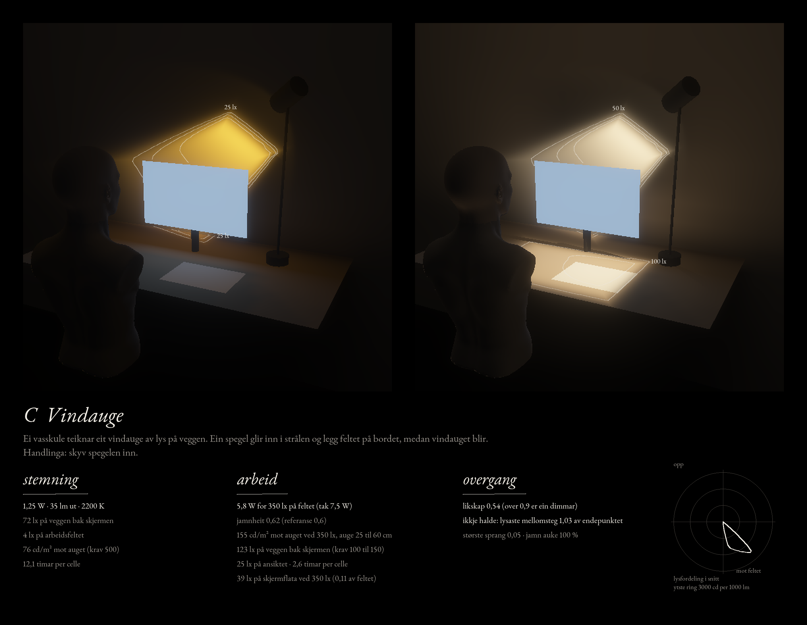
Varmt vindauge
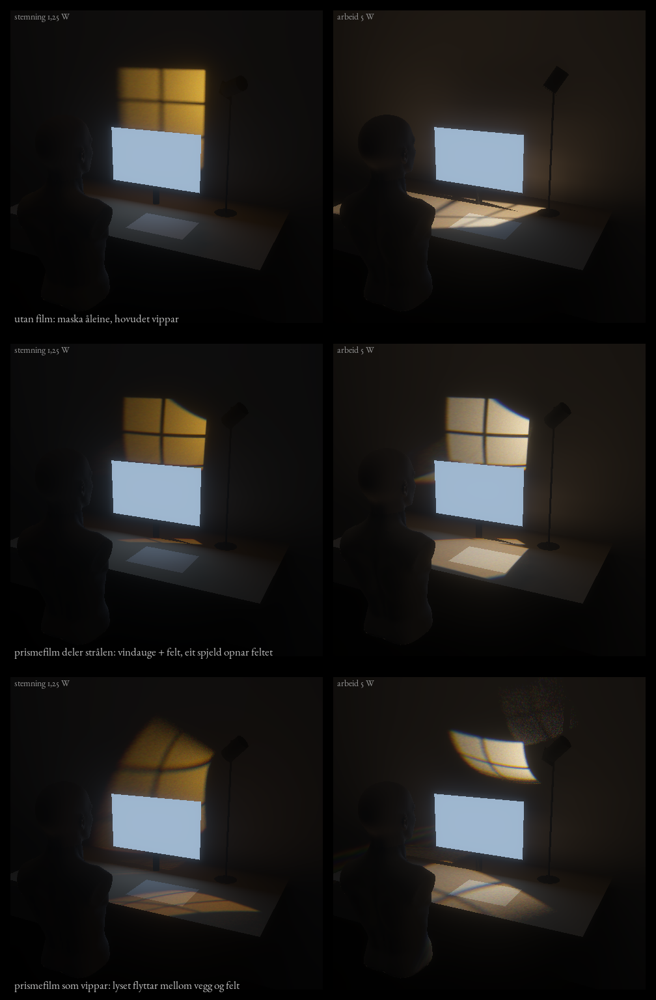
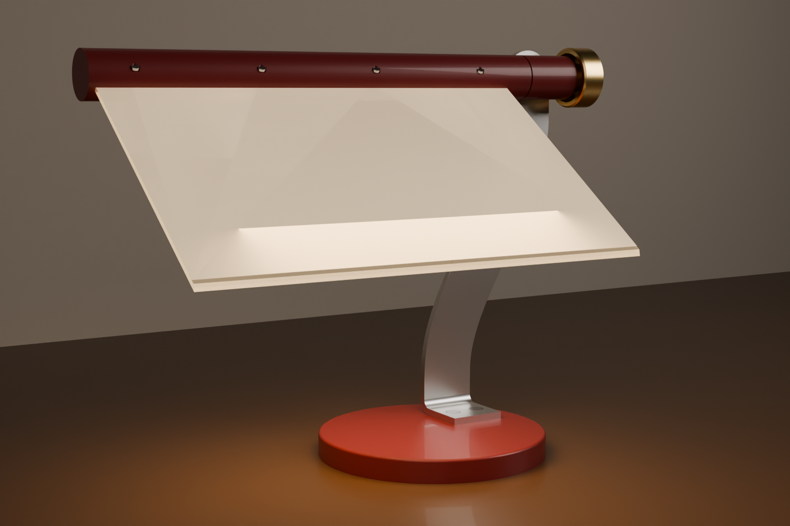
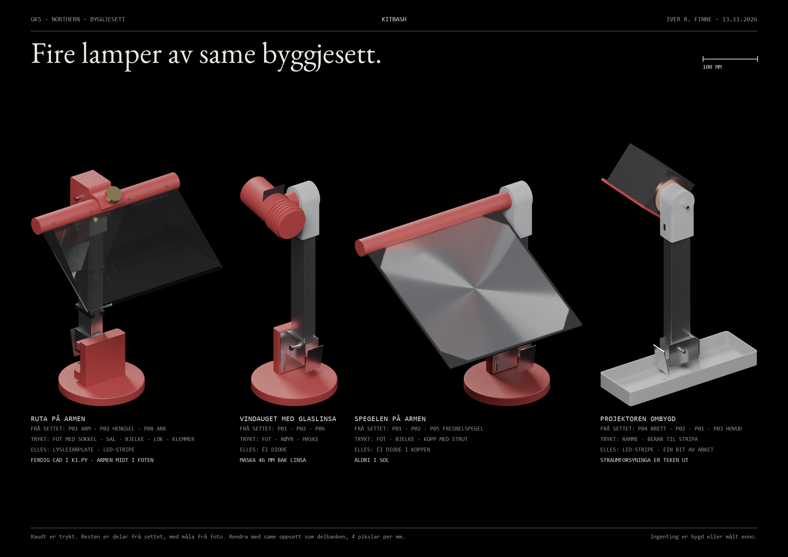
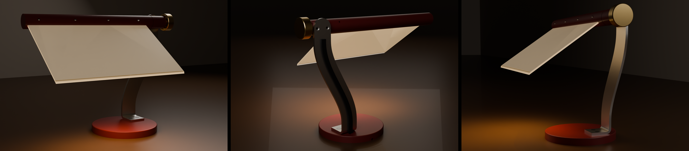
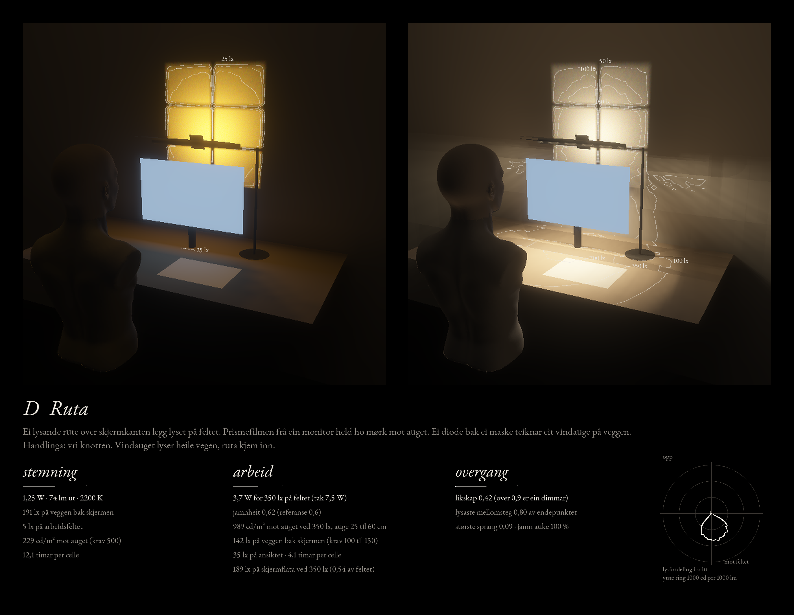
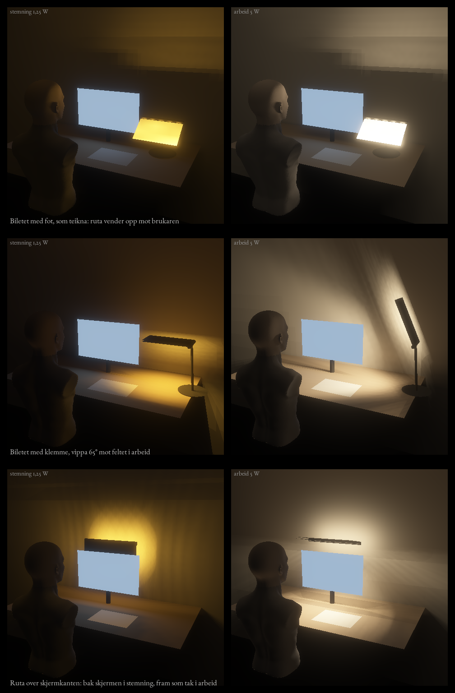
Lysbrettet
16 lysgrep med same watt, same rom og same eksponering. Øvst stemning med 100 lm, under arbeid med 400 lm. Tala står i tal.md. Modell, ikkje måling.
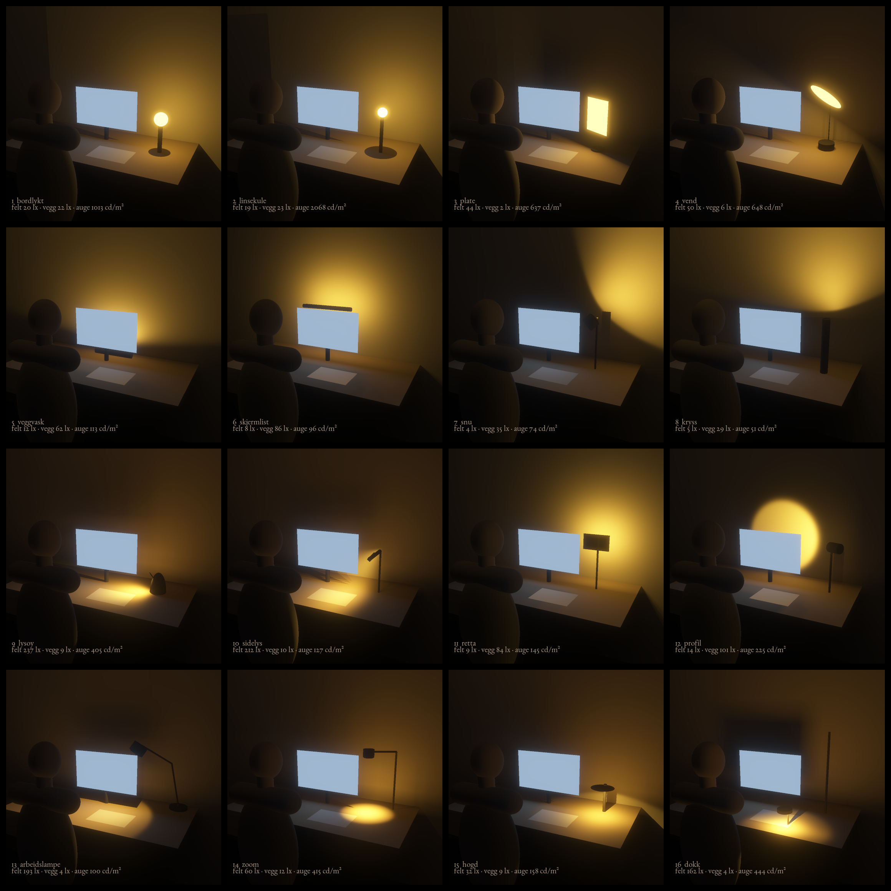
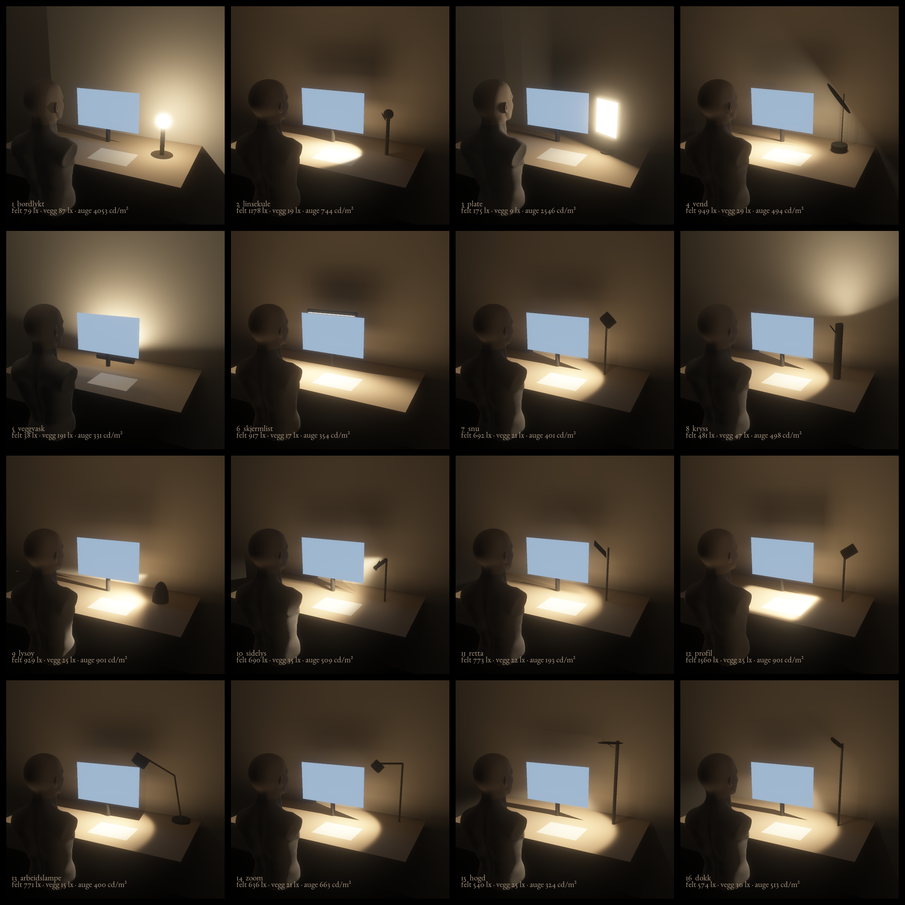
Reflektoren
Ei kjelde i foten lyser på ei skive med ei matt og ei satinert side. Rekna med fotonsporing, så strålen syner i lufta.
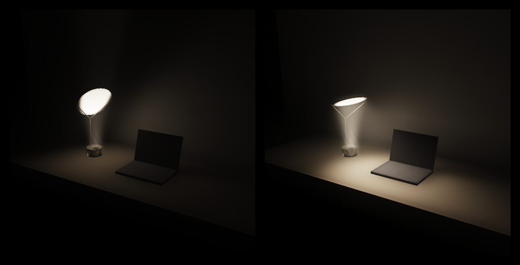
Metoden
Lysskisse på svart · lysmotoren · fotonsporaren · kjeldekoden